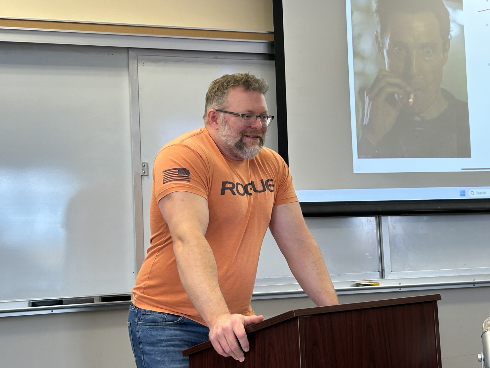
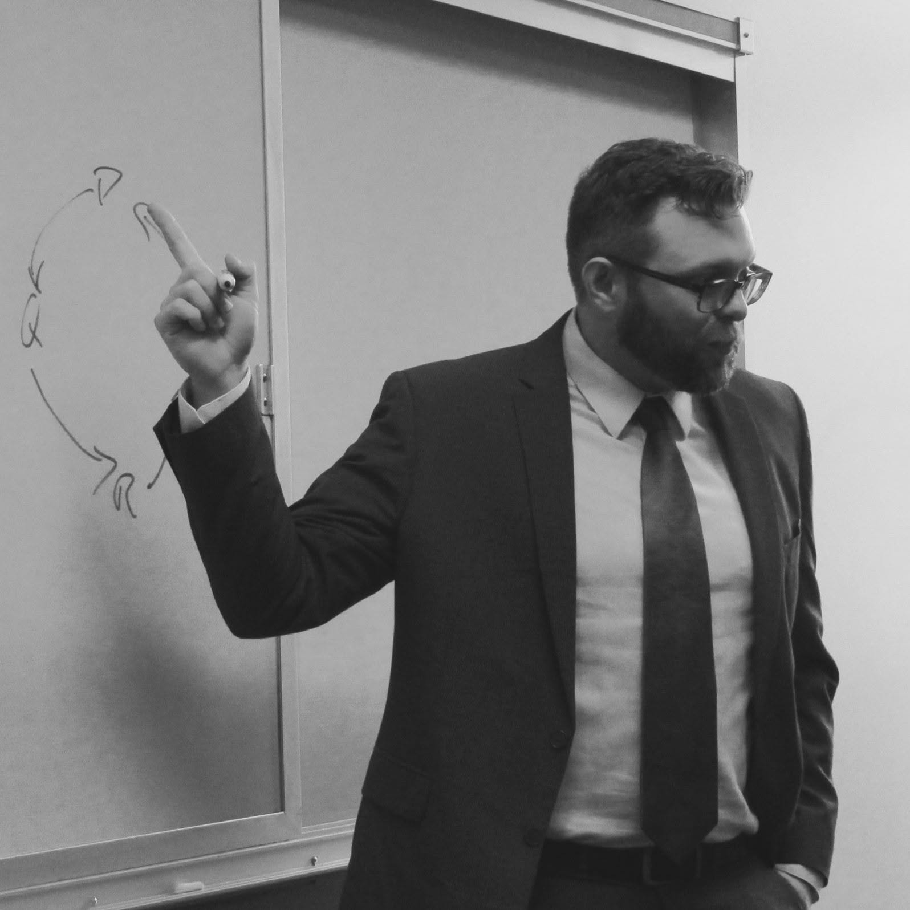

Teaching
Philosophy as dialogue, inquiry, and intellectual formation.
My teaching grows out of the same concerns that shape my research: how people learn from one another, reason together, and cultivate the intellectual character needed for truth-seeking.

Reasoned argument as a shared practice.
Julia Annas writes that, “From Socrates on, reasoned argument is the lifeblood of philosophy because it is only in the give and take of argument that we achieve understanding of the positions we hold and want to put forward to others.”
Julia Annas, Ancient Philosophy: A Very Short Introduction (Oxford University Press, 2000), p. 100.
That captures much of my classroom ideal: not the transmission of settled answers, but a disciplined, humane, and rigorous practice of inquiry.
Teaching record
Challenging courses, accessible instruction.
Across recent courses, students have consistently reported that my teaching is highly effective, available, and able to make philosophy engaging even for non-majors. Across all questions and courses included in my teaching portfolio, my average evaluation score is 4.66 out of 5, above both the departmental average of 4.36 and the all-College average of 4.32.
Since my arrival at Hillsdale, the number of students graduating with philosophy majors has approximately tripled. That growth is not reducible to one person, of course, but it reflects the kind of student interest I hope my teaching helps cultivate.
Pedagogy
What I aim to cultivate
Clarity without condescension
I try to make difficult ideas accessible without pretending that they are simple. Students should know what is expected of them, why the work matters, and how to improve.
“Dr. Church does an excellent job of teaching highly abstract logical concepts in a way that is both effective and integrated with a broader understanding of the world.”Student evaluation, Introduction to Logic
Conversation and shared inquiry
I teach philosophy as something students do together: asking questions, testing arguments, listening charitably, and learning how to disagree well.
“He makes complicated readings make perfect sense, he inspires conversation and deep thought.”Student evaluation, Western Philosophical Tradition
Care, rigor, and intellectual growth
I want students to feel safe enough to ask real questions and challenged enough to do serious intellectual work.
“I don't particularly like philosophy, but I loved this class. Dr. Church is a wonderful professor who is not only engaging, but knows the material very well.”Student evaluation, Western Philosophical Tradition
Representative student reflections
“Made logic interesting, which is a feat in and of itself.”Introduction to Logic
“This was my favorite class of the semester! Dr. Church is an incredible professor who made difficult subject matter fun and exciting to learn.”Introduction to Logic
“One of the best core classes I have ever taken here. Loved Dr. Church's teaching style and the heavy discussion.”Western Philosophical Tradition
“He has taught me a lot about how to boil down complicated subjects with clear communication.”Philosophy of Science
Recent courses
Introduction to LogicPhilosophy of LanguagePhilosophy of ScienceEpistemologyExperimental Philosophy of ReligionModern PhilosophyFaith & ReasonWestern Philosophical Tradition
Assessment and AI
Current work on “Reverse Turing Test” approaches and viva-style assessment explores how teaching and evaluation should adapt in an LLM-shaped educational environment.
